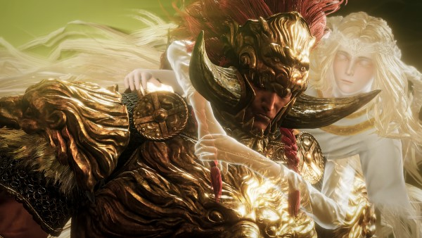
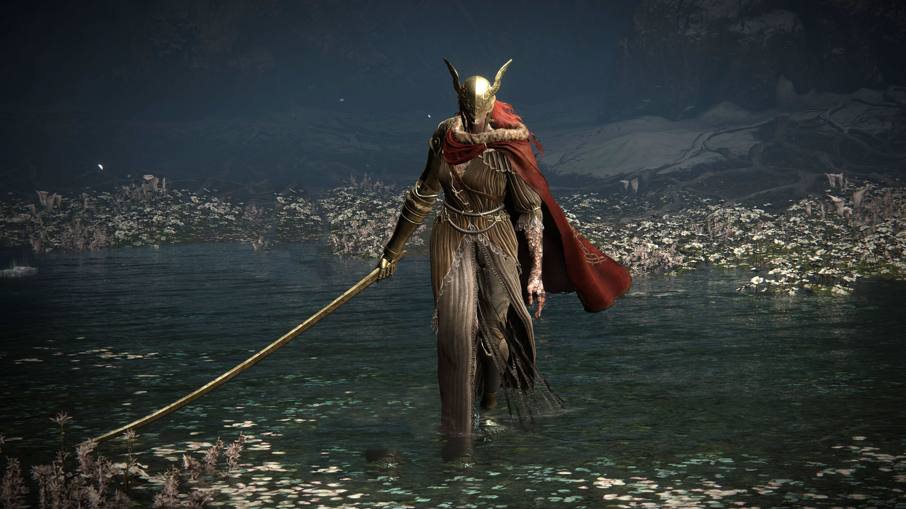
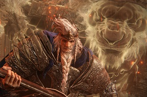
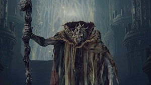

Elden Ring does not present a single, clear antagonist; instead, it offers a fragmented pantheon of rival figures, each embodying different aspects of corruption, ambition, and divine decay. At the heart of the conflict is Queen Marika the Eternal, a godlike figure whose actions—most notably the shattering of the Elden Ring—fractured the order of the Lands Between. Her consort, Radagon, plays a dual role, being both her counterpart and, in a sense, her other self, tied directly to the divine forces that shaped the world. Their children, the demigods, become major antagonists: figures like Godrick the Grafted, Rennala, Radahn, Morgott, Mohg, Malenia, and Rykard, each claiming shards of the broken Ring and embodying distorted ideals of power.
These demigods are less “villains” in a traditional sense and more tragic obstacles, corrupted by ambition, madness, or divine curses. For example, Mohg seeks to create a dynasty of blood, Radahn becomes a decayed general clinging to lost glory, and Malenia fights a doomed struggle against rot consuming her body. Behind them all looms the Greater Will, an outer god whose influence over the Elden Ring and the Lands Between raises questions about whether the true antagonist is divine order itself, which imprisons mortals and gods alike in cycles of ruin and rebirth. Ultimately, the game presents antagonism not as a singular force but as a tapestry of competing wills, each reflecting the overarching themes of decay, hubris, and the cost of power.
|  |  |  |  |
|---|